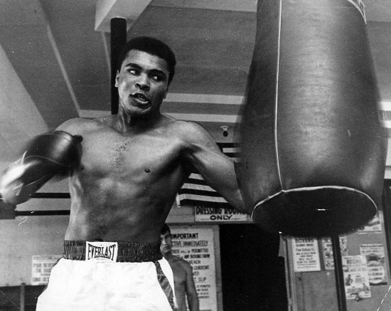
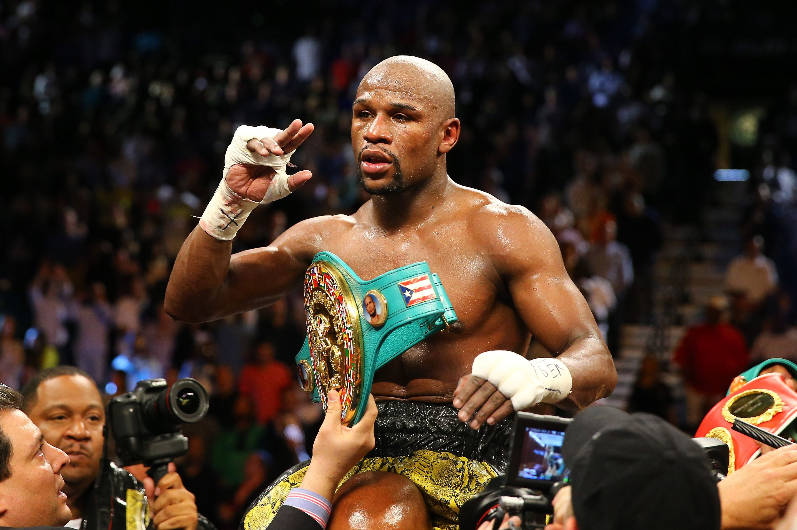

LEYENDAS DEL BOX
Conocé a aquellos peleadores que marcaron una época, rompieron récords o protagonizaron contiendas memorables.
Muhammad Ali
Nacido el 17 de Enero de 1942 en Louisville, Kentucky (EEUU), bajo el nombre de Cassius Marcellus Clay. Ali ganó la medalla de oro en los Juegos Olímpicos de Roma 1960, y ese mismo año, con 18 años hizo el salto al profesionalismo. Irreverente y pendenciero, el entonces Cassius Clay se transformó rápidamente en una atracción para los medios por sus llamativas declaraciones y por la habilidad de predecir en qué round noquearía a sus rivales. Predicciones que sucesivamente cumplía. En 1964, poco después de cumplir 22 años, le llegó su primera chance mundialista, chance que aprovecharía al noquear a Sonny Liston en 7 asaltos. Defendió el campeonato hasta que en 1967 fue baneado del boxeo por su negativa a ir a la guerra de Vietnam. Llevó a los organismos a la Justicia y en 1970 se le restituyó su licencia de boxeador, iniciando así la segunda etapa de su carrera a su regreso. En 1974 recuperó el título mundial de los Pesados en una pelea legendaria en Kinshasa, Zaire tras noquear en 8 rounds al formidable George Foreman. En 1975 noquearía a Smokin' Joe Frazier en Manila (Filipinas) en otra pelea histórica. En 1978, para sorpres del mundo, perdería el título ante el novato Leon Spinks, pero lo recuperaría en Septiembre del mismo año. En 1979 anunciò su retiro pero volvió para pelear dos veces más, ambas sendas derrotas ante Larry Holmes (1980) y Trevor Berbick (1981) para retirarse definitivamente. Años después se le diagnosticó la enfermedad degenerativa del Parkinson. Falleció el 3 de junio del año 2016 a los 74 años de edad.
Floyd Mayweather Jr.
El oriundo de Grand Rapids, Michigan (EEUU), nació el 24 de Febrero de 1977. Medallista olímpico de bronce en Atlanta 1996, entrenado por su padre Floyd y su tío Roger (ambos ex-boxeadores) hizo su salto al profesionalismo en Octubre del mismo año. Obtuvo rápidamente el apodo de "Pretty Boy", y ganó su primer título mundial a los 21 años en el peso Super Pluma (58,967 kg.). Fue escalando en las divisiones siendo campeón en los pesos Ligero (61,237), Superligero (63,503), Welter (66,678 kg) y Superwelter. Su ascendente carrera en los pesos, fue a la par con un crecimiento económico en sus bolsas sin precedentes, al punto que ganó el apodo de "Money" (Dinero), y amasó en sus 50 combates profesionales (todas victorias) y exhibiciones (combates no oficiales), la friolera suma de 1000 millones de dólares.